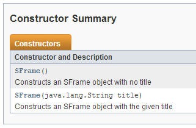
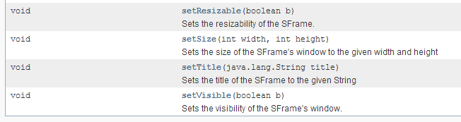
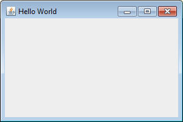
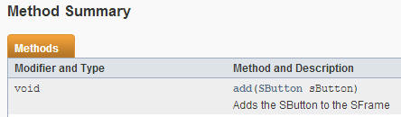
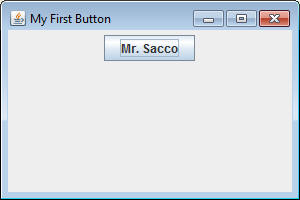
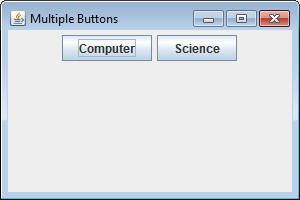

import sacco.gui.*;
SFrame API
SButton API
For this unit we will be focusing on a set of objects that can be used to make simple interfaces. These classes (SFrame, SButton, SLabel) are all simplified versions of Java's swing library, which is the official way of creating GUIs in Java.
What is an Object?
An Object is a special data type in Java that can do two main purposes:
1) An Object holds data that pertains to the object. The type and quantity of
data held is up to the designer of the Object.
-Example: Inside an ArrayList is a list of all the data it’s supposed to hold,
as well as an int to represent the size.
2) An Object can perform actions using that data (methods). Sometimes it’s as
simple as returning information from the object, but sometimes it changes the
data inside the object.
-Example: ArrayLists have methods such as size and get, which return information
from the object, but also add and remove, which modify the data inside.
The Life of and Object:
One of the most important things to know about an object is that you must construct one before you start using it. When we've come across this while using Scanner it looked something like the following:
Scanner scan = new Scanner(System.in);
This line does two things:
1) Declares a variable named scan, which will be used
to reference the Scanner object for the rest of the program.
2) Constructs a new Scanner objects and assigns it to
that variable. The System.in is the parameter that the Scanner needs when
it's setting up
This is a very common way of creating objects. We just saw it in ArrayLists's
too:
ArrayList<String> strList =
new ArrayList<String>();
After construction it is now fine to start calling methods. For Scanner it would be something like scan.nextLine(), or for ArrayLists it could be strList.add("Hello");
How do you know what parameters to use when constructing
When professional class files are created, they are documented in a special way using a system called javadocs. The are used to create a listing of all of the constructors and methods named the API, along with the parameters needed to use these methods. Let's walk through an example.
Create a class named FirstGUIs and have one method:
public static void firstFrame()
This method's job is to create and show a blank window on the screen using the SFrame object that we've imported from sacco.gui.*;
Our strategy will be the following:
1) Construct a new SFrame with the appropriate parameters to set up an
initial frame
2) Call some methods to help set up some more attributes
3) Call the method that will display the SFrame
All of the information we need is in the SFrame API , which you should keep open in a separate window for reference.
1) Constructing:
Before we construct an object we have to know what parameters are needed. If you open the SFrame API, you'll notice a section named Constructor Summary

There are two possible options when constructing an SFrame. Either we can give it zero parameters, or we can give it a String that will represent the title. Since this is our first GUI, let's add a "Hello World" as the title. Add the following line of code to your firstFrame method, which uses the second constructor on the list:
SFrame frame = new SFrame("Hello World");
The data type is SFrame, the variable name is frame, and the parameter is the "Hello World" String. Don't run it yet, nothing will happen.
2) Call any methods needed to set the frame up further.
One thing that's true about an SFrame is that there is no way to set the width and the height with a constructor. It's time to check the methods to see if it's a possibility. Go back to the SFrame API and scroll down until you see a section named Method Summary. This is where they list all of the methods that you can use with an SFrame, along with the important parameters. We're currently concerned about the width and the height, and we find a helpful method at the end of the list.

The setSize method allows us to affect the width and the height of the SFrame. It is written here that both a width and a height are necessary when setting the size. We'll choose a width of 300 and a height of 200. Add the following line to your method:
frame.setSize(300,200);
This should change the SFrame to be the right size. We're now as ready as we can be for this example.
3) Display the SFrame
SFrames keep track of several bits of information, such as the width and height. One of the things it also keeps track of is if it should be displayed or not. The API shows that there is a method named setVisible. A value of true will make the window display. Add one last line to your method:
frame.setVisible(true);
This should be all we need to get a very basic SFrame operating. Compile and run the program, a window should pop up (Sometimes it pops up behind the other windows)

While it's not terribly exciting, the frame has a title of "Hello World", the width is 300 and the height is 200.
Combining multiple objects:
While launching a blank frame can be fun, it's really meant to be a container that holds some other components. Some of the methods are there to help add things to that container. For example, there are several methods named add. Let's look at the first one:

Notice that the parameter is not as simple as a String or an int. It actually takes in an entire SButton object.
Add a new method with the following header:
public static void firstButton()
This method will create an SFrame like before, but also construct an add a button to it.
1) Like before, construct an SFrame object with a title "My First Button" and set the size to 300x200, but don't set the visibility yet. We still want to modify it to have a button.
2) Before we can call the add method, we need to have an SButton fully constructed and ready to go. Open up the SButton API and look for the constructor section. Use one of the Constructors listed to construct an SButton object with your name as the text.
3) Now that you have a constructed SButton object, it's time to let the SFrame know about it. Call the SFrame's add method (don't say SFrame.add, use the variable you created earlier) and pass the SButton's variable as the parameter.
4) Now it's time to call the setVisible method to display the frame. After that, run the method and observe the results.

Exploring other sizing options:
Add a method with the following header:
public static void firstPack()
Use what you know about SFrames and SButtons to try and recreate the following GUI. This time there are two SButtons, so you should construct two of them and make sure that you add both of them to the frame.

If you look at the list of methods for SFrame, there are actually two methods that affect the size of the frame. The setSize method is used to set it to very specific values, but there is also another method named pack, which takes in no parameters and sets the size based on what is currently being held by the SFrame.
Go to your code. Instead of calling the setSize method, call the pack method to automatically set the size. There are two options for when you call the pack method: before you've added the buttons to the frame, or after you've added them. Try both and keep the one that looks like the following:
Add a method with the following header:
public static void manyButtons()
In this method, create an SFrame and then use a loop to add twenty buttons to it.
SFrames allow you to modify them so that they are not resizable. Look at all the SFrame methods in the API and try to find the one that affects resizing. Look at the parameters that it requires and use it to change your SFrame to non-resizable.
When turning in these programs, make sure that you have the following. They should open to the appropriate size and the window titles should match.
firstFrame()
firstButton()
firstPack()
manyButtons(): Make sure that it is not resizable